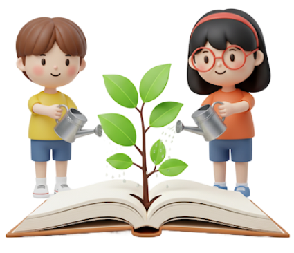
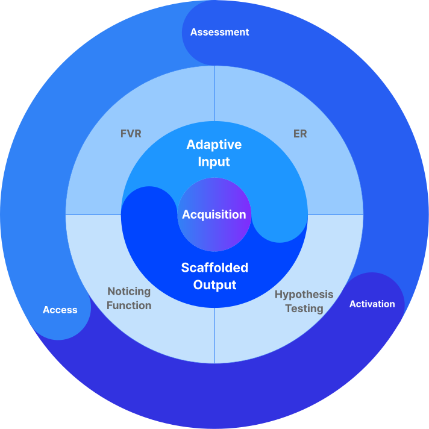

초등학생 이*아 학부모
‘영어가 싫다’던 아이의 입에서 ‘재밌다’는 말이 나왔어요
아이가 영어를 어려워하고 힘들어해서 늘 걱정이 많았습니다. 그러나 에픽에 다닌 후 가장 큰 변화는 아이가 영어에 대한 부담감을 내려놓았다는 거예요. 긍정적인 자세를 가질 수 있도록 이끌어주셔서 진심으로 감사합니다.

평생 갈 영어를 다지는 지금이 곧 영어 습득의 골든타임입니다
영어는 공부하는 것이 아니라, 문맥 속 반복
노출로 자연스럽게 ‘습득’해야 합니다.
파편적인 공부만으로는 영어가 늘지 않습니다.
Krashen, S. D. (2004). The Power of Reading: Insights from the Research (2nd ed.). Libraries Unlimited.
영어는 읽기를 통해 습득하게 됩니다. 다독은
문법과 어휘는 물론, 듣기·말하기·쓰기까지
길러줍니다. 읽기 없이 습득이 불가능합니다.
Krashen, S. D. (2004). The Power of Reading: Insights from the Research (2nd ed.). Libraries Unlimited.
읽기는 영어 습득의 핵심이자, 고득점과 학업
성과를 예측하는 가장 강력한 지표입니다.
초등 시기는 읽기 습관을 들일 수 있는 마지막
결정적 시기입니다.
Mol, S. E., & Bus, A. G. (2011). "To Read or Not to Read: A Meta-Analysis of Print Exposure from Infancy to Early Adulthood." Psychological Bulletin, 137(2), 267–296
제2언어 습득 이론(SLA) 기반 교육 방식과 게임화로
학습효과를 극대화합니다

영어의 즐거운 습득과 평생 가는 독서 습관을 설계합니다
영어의 즐거운 습득과 평생 가는 독서 습관을 설계합니다
미국 교과과정에서 사용되는 엄선된
글로벌 명작들로 영어 독해의 기반을 다집니다

주요 시리즈
Magic Tree House, Amulet (그래픽 노블), I Survived
학습 초점
줄거리 이해력, 긴 글을 읽는 집중력(Reading Stamina), 문맥 속 단서 활용 능력
선정 이유
장편 스토리에 몰입감을 주는 베스트셀러 시리즈와 Eisner Award 수상작인 Amulet과 같은 그래픽 노블을 활용해 현대적이고 시각적인 방식으로 독서의 즐거움을 극대화합니다.

주요 출판사 및 시리즈
National Geographic Kids, Usborne Books, Who Was?, The Magic School Bus
학습 초점
배경지식 확장 어휘(과학, 역사, 예술 등), 정보 중심 글 읽기 능력
선정 이유
세계 최고 수준의 논픽션 컬렉션으로 인체부터 고대 문명까지 다양한 주제를 영어로 탐구하도록 이끌어 지적 호기심을 자극하고 균형 있는 독서를 완성합니다.
아이의 관심사를 재능으로, 잠재력을 자신감으로 만들어드립니다
· 정규 수업 실력을 맞춤형 심화 선택 수업으로 연결
· 단어 암기, 내신 문법, 북클럽 등 다양한 선택지 제공
· 정규 수업과 연중 병행하며 자신감과 성취로 성장

· 방학을 성장의 기회로 바꾸는 몰입형 프로그램
· 새로운 영역 도전과 다양한 테마 수업 참여
· 실력, 즐거움, 추억을 쌓으며 높은 만족도와 재등록률 입증

· 영어를 생활과 관계의 일부로 경험하는 기회
· Movie Day, Market Day 등 정기 이벤트 및 활동 참여
· 깊은 소속감을 통해 자연스럽게 영어 자신감 형성

아이의 관심사를 재능으로,
잠재력을 자신감으로 만들어드립니다
· 정규 수업 실력을 맞춤형 수업으로 연결
· 문법, 북클럽 등 다양한 선택지 제공
· 정규 수업과 병행하며 자신감과 성취로 성장
· 방학을 성장의 기회로 바꾸는 프로그램
· 새롭고 다양한 테마 도전 및 수업 참여
· 실력, 즐거움, 추억으로 높은 만족도 입증
· 영어를 생활과 관계의 일부로 경험하는 기회
· 다양한 액티비티 주기적으로 제공
· 깊은 소속감을 통한 영어 자신감 형성
체계적인 강사진 및 코티칭 기반 순환 수업으로
일관된 수업 퀄리티를 유지합니다


막막했던 영어 공부, 감이 아닌 데이터로
즐거운 성장의 여정으로 바꿔드립니다


네, 그럼요. CORE 프로그램은 바로 그런 아이들을 위해 독서의 즐거움을 알려주는 것에 모든 초점을 맞추고 있습니다. 억지로 읽게 하는 대신, 아이가 스스로 책에 흥미를 느끼도록 이끌어주는 체계적인 장치들이 마련되어 있습니다.
아이들이 단숨에 빠져드는 흥미진진한 스토리의 Magic Tree House, 그래픽 노블인 Amulet 시리즈처럼 '재미'가 검증된 명작으로 시작합니다. 아이의 눈높이와 취향에 맞춰 '읽어야 할 책'이 아닌 '읽고 싶어지는 책'을 만나게 해주는 것이 저희의 첫 번째 목표입니다.
네, 두 가지 핵심 방법이 있습니다. 첫째, AR 퀴즈, 리더보드 등 게임화(gamification)으로 독서에 대한 성취감과 재미를 부여합니다. 둘째, 책을 진심으로 사랑하는 저희가 롤모델로서 그리고 레슨플랜 설계를 통해 독서가 얼마나 즐거운 활동인지 아이들이 자연스럽게 느끼고 배울 수 있도록 이끌어 줍니다.
아닙니다. CORE 프로그램의 모든 커리큘럼은 미국 컬럼비아 교육 대학원에서 개발하고 초등 교과과정에서 검증된 독서 교육 모델에 기반합니다. 아이들은 재미있는 활동을 통해 자연스럽게 어휘력, 문해력, 비판적 사고력을 기르게 됩니다. '즐거움'은 최고의 학습 도구입니다.
독서는 지루한 숙제라는 아이의 인식이 독서는 새로운 세계를 탐험하는 모험이라는 인식으로 바뀌는 것을 기대할 수 있습니다. 스스로 책을 찾아 읽는 즐거움을 깨닫고, 이를 통해 얻은 문해력과 자신감은 모든 학습의 가장 튼튼한 기초가 되어줄 것입니다.
SR 점수는 아이의 독서 능력을 객관적인 데이터로 보여주는 독서 건강검진과 같습니다. 이 점수를 통해 아이의 현재 위치를 정확히 파악하고, 성장의 모든 과정을 체계적으로 추적하고 관리할 수 있습니다.
저희는 SR 데이터를 바탕으로 아이의 ZPD(근접발달영역)에 맞는 최적의 도서를 추천하고 커리큘럼을 설계합니다. ZPD란, 아이가 약간의 도움으로 성공적으로 과제를 해결할 수 있는 영역을 뜻합니다. 이를 통해 아이는 너무 쉬워서 지루하지도, 너무 어려워서 좌절하지도 않는 독서를 경험하며 최고의 성취감과 함께 빠르게 성장합니다.
CORE는 단순히 글자만 읽는 수업이 아닙니다. 저희는 풍부한 독서(Input)가 자연스럽게 글쓰기와 말하기(Output)로 이어져야 진정한 언어 능력이 완성된다고 믿습니다. 모든 수업은 아이가 읽은 내용을 바탕으로 토론하고, 자기 생각을 요약하여 발표하고, 논리적으로 글을 쓰는 활동을 포함하고 있습니다.
AI-SO는 Adaptive Input(개인 맞춤형 인풋)과 Scaffolded Output(체계적 지원 아웃풋)의 약자입니다. 세계적 언어학자 Krashen과 Swain의 언어습득 이론을 결합한 에픽의 교육 철학으로, 아이 수준에 딱 맞는 원서를 재미있게 흡수하고(AI), 선생님의 지원 속에서 자신의 생각을 글과 말로 자신감 있게 표현하도록(SO) 돕는 최적의 영어 습득 방식입니다.